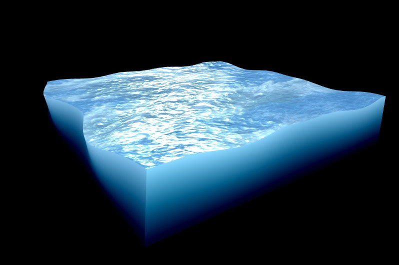

Qt 3D: Advanced Custom Material QML Example
Demonstrates creating advanced materials in Qt3D.

This example demonstrates creating advanced custom materials.
Running the Example
To run the example from Qt Creator, open the Welcome mode and select the example from Examples. For more information, visit Building and Running an Example.
Description
Advanced custom material example shows more complex shaders, and demonstrates controlling your shader properties with QtQuick user interface and Animation. Water is a 3D mesh, that is modeled and uv mapped inside Blender, and then brought into Scene 3D as an .obj file. Shader properties that user can control, are defined in advancedcustommaterial/WaterMaterial.qml.
Controls
Texture scale slider
Multiplies texture coordinates inside the vertex shader. Controls the size of the textures on water surface.
Texture speed slider
Offsets values for texture coordinates which are animated in advancedcustommaterial/Water.qml and then passed to vertex shader. Creates the effect of textures scrolling over the surface.
Specularity
Multiplies specular texture values inside fragment shader. Makes the water reflective.
Distortion
Multiplies the offset in red and blue channels of wave texture in fragment shader. Makes the surface textures animate more randomly.
Normal amount
Multiplies the normal map values inside fragment shader. Controls the visibility of smaller waves on the water surface.
Wave speed
Modifies the frequency of the sine wave inside vertex shader. Controls the speed of the waves.
Wave height
Multiplies the vertex Y position inside vertex shader. Controls the height of the waves.
Mesh rotation
Rotates the water mesh in advancedcustommaterial/Water.qml.